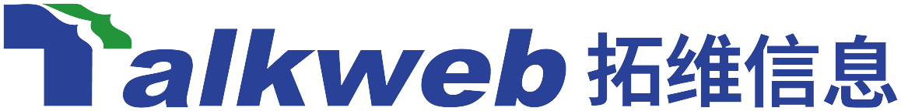

Agent 应用开发工程师
参与上亿用户产品 QQ 的 AI Agent「小Q」研发
设计混合路由，使 70%+ 请求绕过主 ReAct，准确率达到 95%+；构建分层 Agent Memory，并推进个性化主动服务与结构化生成降级能力。
AI Agent / Agent Infra
现就读于湖南大学计算机技术专业，硕士期间主要参与 NLP 与计算机视觉相关的研究和工程实践。目前聚焦 LLM Agent、模型后训练与 AI 全栈开发，主要使用 Python、Java 和 JavaScript，求职方向为 AI Agent / Agent Infra / AI 全栈开发。
About
硕士期间，我先后在国央企和大型互联网公司参与算法与 AI 应用研发，实践内容覆盖计算机视觉、LLM 后训练、Text2SQL 与 ToC Agent 产品。多样化的项目经历让我逐步形成了从数据处理、模型优化到系统开发和效果评测的完整工程视角。
我不仅关注模型和算法效果，也重视工程链路的稳定性、评测反馈与最终交付，希望将模型能力转化为可靠、可验证、可持续迭代的产品能力。未来希望继续深耕 AI Agent 与 Agent Infra，并进一步提升复杂 AI 系统的端到端开发能力。
Internship Experience
从视觉算法、模型后训练到 ToC Agent 产品，持续积累模型研究与工程交付经验。
参与上亿用户产品 QQ 的 AI Agent「小Q」研发
设计混合路由，使 70%+ 请求绕过主 ReAct，准确率达到 95%+；构建分层 Agent Memory，并推进个性化主动服务与结构化生成降级能力。

参与 Text2SQL 链路的研究与开发
贯通数据合成、模型后训练、RAG 与 SQL 执行反馈修复；执行准确率 EX 95%+，数据集构建耗时降低 80%，覆盖提升 20%。
参与耕地、矿山场景下车辆检测识别算法的研究

参与道路缺陷质量检测模型的研究
基于 YOLO + SAM 构建检测与分割链路，相关指标达到 90%+，巡检效率提升 40%。
Development
Contact
欢迎交流 AI Agent、模型后训练与应用系统工程实践。